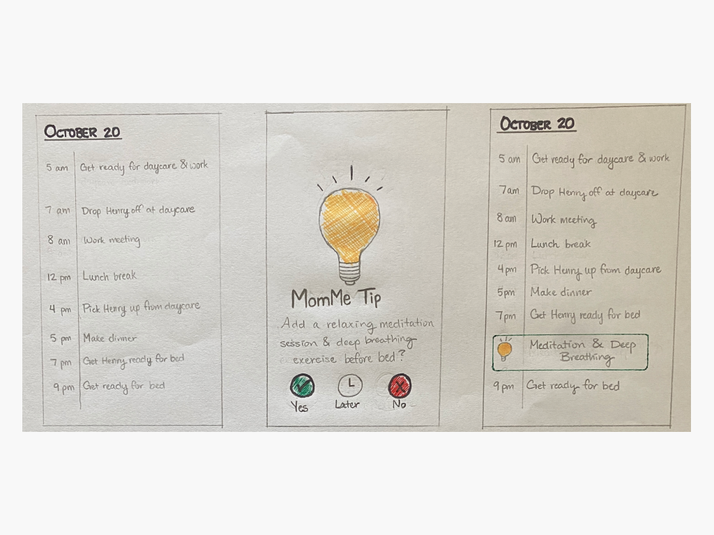
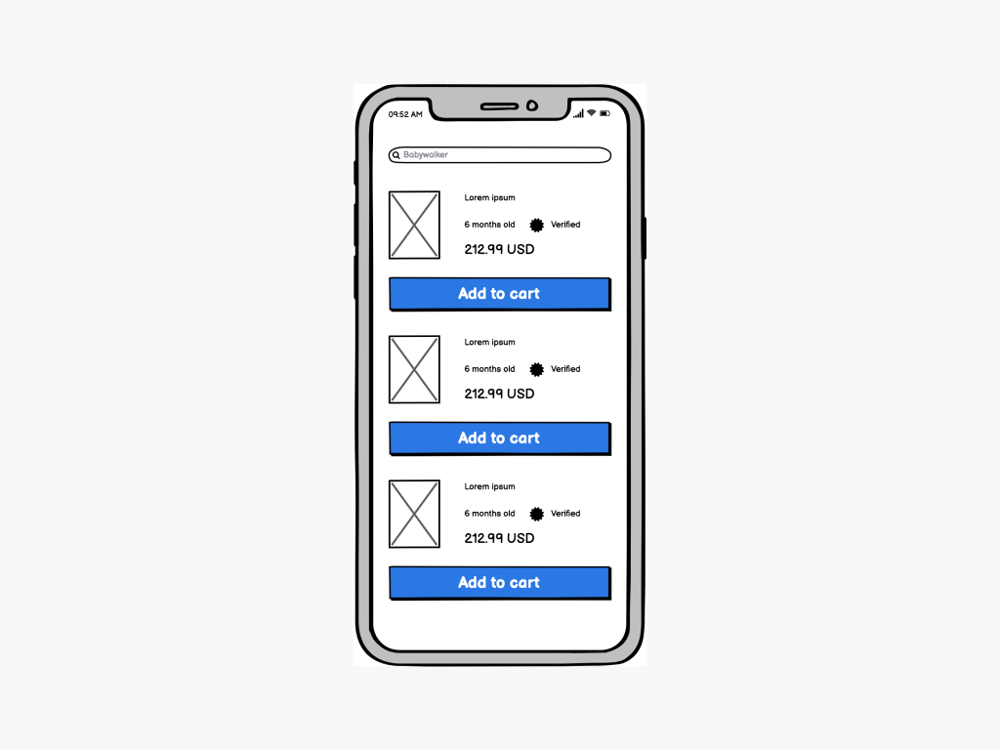
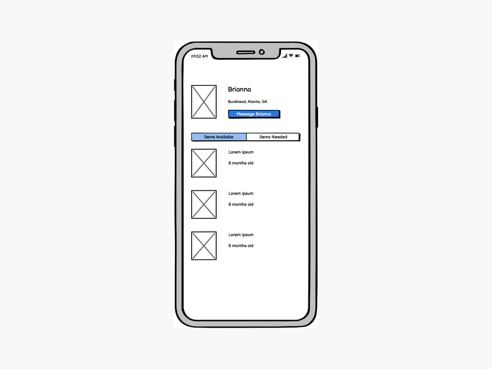
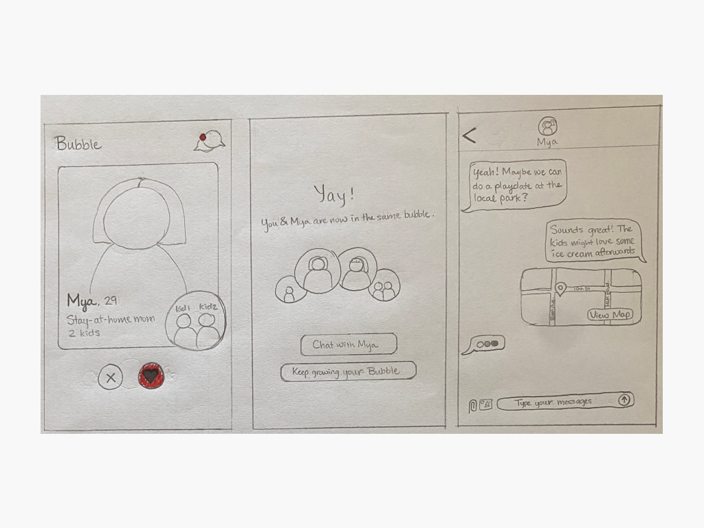
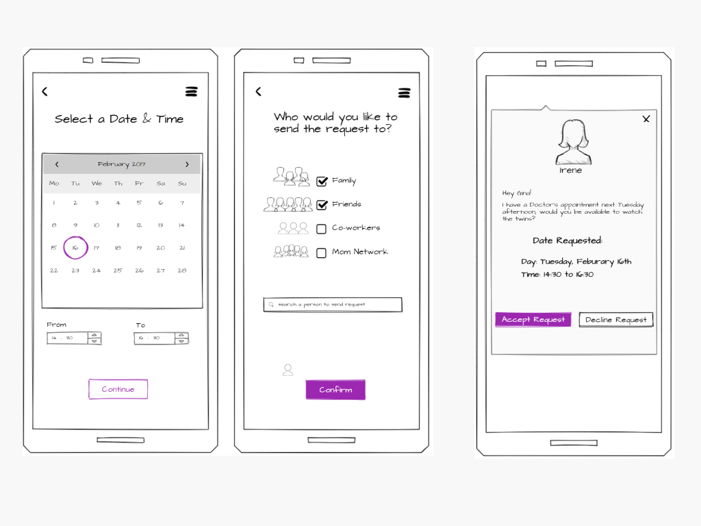
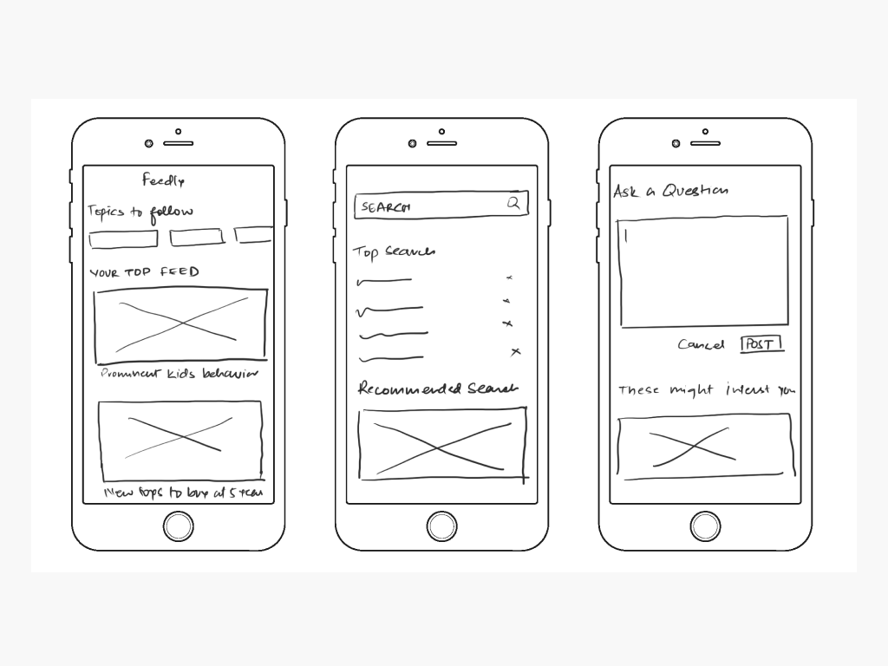
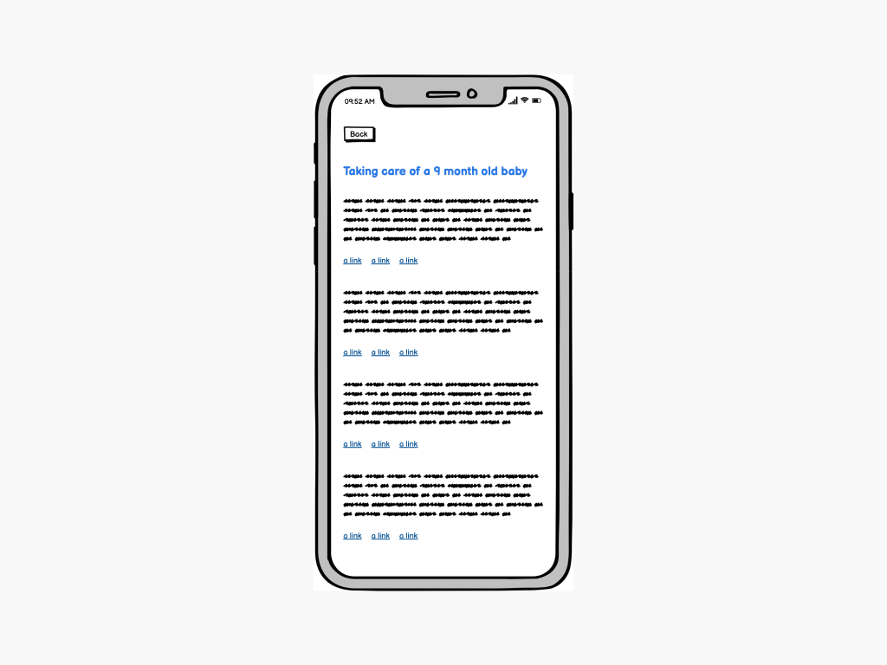
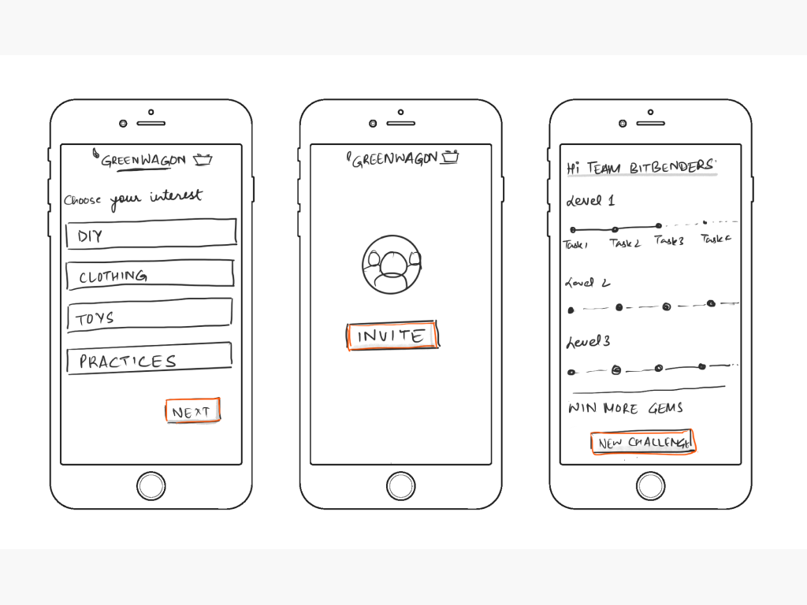
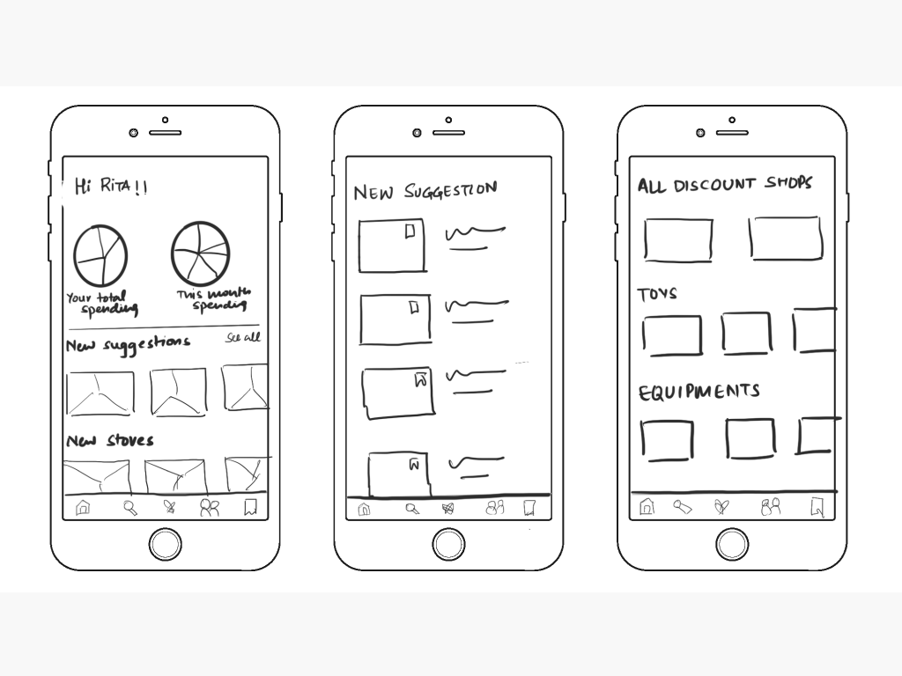
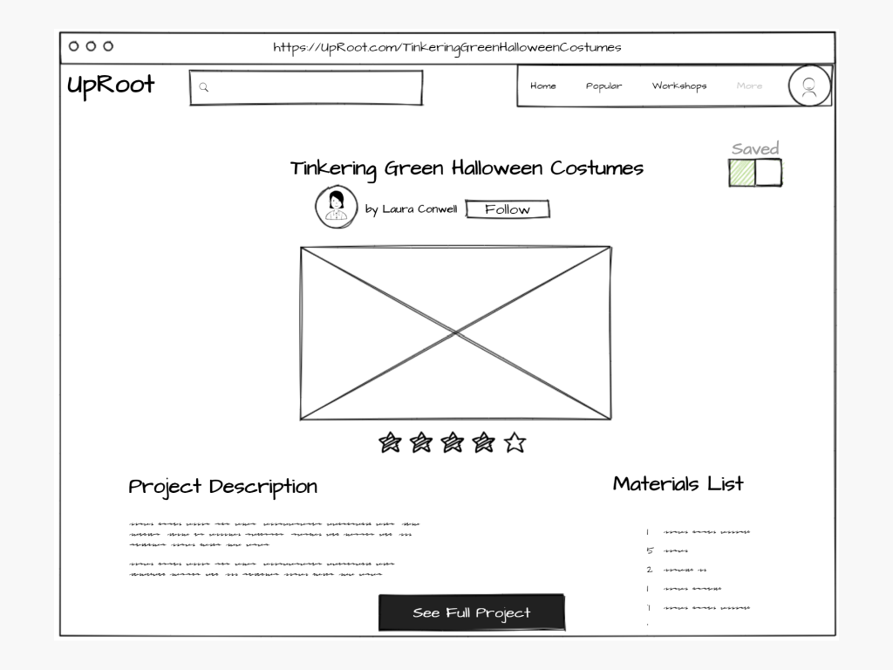

BitBenders
Help moms learn and gain more access to sustainability to enhance their lifestyle and daily routine.
Team : Aayahna Herbert, Akash Talyan, Doris Amouzou, Rishivanth Thulasiraman
Help moms learn and gain more access to sustainability to enhance their lifestyle and daily routine.
Team : Aayahna Herbert, Akash Talyan, Doris Amouzou, Rishivanth Thulasiraman
According to the USDA, the average cost to raise a child up to the age of 17 is $233,610 [16]. Raising a child can be expensive. We want to design a better way for mothers of babies and toddlers to lower their living costs through a shared community of other mothers for this project. Oftentimes motherhood communities are centered around children and how their needs can be fulfilled, and thus catering to the needs of the mother is oftentimes neglected [17]. It is crucial that we understand and explore the needs of mothers with young children without only focusing on their children. Making sure the needs of a mother are met can ensure that a child’s needs can efficiently be met as well.
We sent out surveys to our target users, conducted semi-structured interviews with the said users and did affinity mapping as a group. The major research findings are

Based on our user research and analysis, we extracted a set of functional and non functional design requirements for our final solution.
Our functional requirements are :
Our non functional requirements are :
Based on our research insights, we brainstormed and came up with 10 different ideas.
MomMe Time : MomMe Time is a calendar app that moms can use to put in their daily routine activities, like getting themselves and their baby ready in the morning, cooking meals, working, and getting ready for bed. The app will then provide tips and recommendations to help the mom user relax based on gaps in their schedule.
Mom Marketplace : The idea is to create a two-sided marketplace for moms to buy and sell used items. To ensure the quality of the items being bought, every item is verified and has a verified certificate next to it. The rest of the workflow follows a standard two-sided marketplace workflow like eBay.
Circular Wishlist : The idea is to create a community for swapping and exchanging stuff as opposed to being a marketplace. Moms can also request items they need from the community and someone in the community can respond to the request.
MyBubble : MyBubble is an app to help moms find other moms in their areas with similar interests and kids around the same age. Matching with another mom will add that newly matched mom to their bubble and let them talk with them about anything: setting up playdates, hanging out, or asking for advice about motherhood, for example.
HangTime : This is a tasker platform that allows mothers to put in their social availability and also request a time for family members, friends, and anyone in their network to spend time with them or their baby. The receiver of the request can accept the request and have it synced to their calendars to be reminded. Once someone or the required number of people have accepted the request, other people in the network who have received the alert will be notified that the request has already been accepted.
Smart Feed : It is a smart feed aggregator around the important topics related to pregnancy and baby care. The system prioritizes topics in mom support groups according to the user's preference. The system requires initial topic inputs to follow from the mom and shows all the related information. The users will also have the ability to select or deselect any relevant topics as per their preferences.
Baby Bible : The idea is to provide moms with the information they need to take care of their child at each stage of the child’s growth process for the first 3 years. Along with the information, the list of items the child will need along with options to buy them sustainably is provided.
GreenWagon : GreenWagon is a product that helps moms practice sustainability as a group. It allows moms in the neighborhood and also with the common interest to come together to perform simple tasks. The process is gamified motivating moms to gather points that can be reimbursed to group events, discount coupons, etc. The goal of the application is to inculcate the practice of sustainability in moms’ habits while getting motivated by other moms in the group.
BudgetBaby : BudgetBaby is a smart budgeting system that shows options to shop depending on the baby’s growth prediction. The system predicts when babies will outgrow their clothes based on the user’s initial input and shows the most budgeted options to shop and organize coupons for different retail stores to shop for baby items.
UpRoot : This is a community for families and children to be able to be involved in DIY sustainable activities using upcycled materials or household materials. This is a website that consists of projects with instructions uploaded by other people in the community as well as content creators of UpRoot.
From our 10 ideas, we chose parts of each idea and combined them into 2 final design ideas whose storyboards are presented here.
The main character of our storyboard is Irene who is a single mom and has a 10-year old baby. It’s difficult for her to be a single mom and manage everything throughout the day. She hardly gets time for herself. Not being able to find time to take care of herself, she feels very stressed. One day she decided to try out this new application called MomMe Time aimed at helping moms manage their schedule effectively and allowing time to take off for themselves. She instantly signs up for it. The application initially asks a few signup questions related to her interest areas.
One day she gets a calendar notification about her upcoming doctor’s appointment. Due to Covid-19 restrictions, babies are not allowed at the clinic. She is now worried about her baby and needs someone in her close network to watch her baby for a few hours. She opens up the MomMe Time application on her phone and raises a request for babysitting for a few hours. They all received an alert either from the app or via text message if they do not have the app downloaded. Gina, a close friend of Irene, downloaded the app since most of her friends have all become mothers. She received a notification for the request moments after Irene sent it, and accepted it.
On the day of the appointment, she calls Gina to check that everything is scheduled and she will be coming to her place to babysit. Next time, the application reminds Irene to take some off, provide some tips and meditation lessons tips. Now Irene can schedule her day-to-day activity effectively and manage everything on a single application, MomMe Time.
For our next design idea, My Bubble, our main character of the story is Natasha. She is a young mom and recently moved to New Jersey from San Francisco because of her husband’s job transfer. It’s hard for her to find friends in the new area. She founds out a new social network application, My Bubble, which allows her to connect with other moms in her neighborhood who have similar interests. It aims to make it easy to meet, chat and socialize with other like-minded moms. She downloads the application and enters her personal information, interests, and topics she’s interested in. After a few days, she matches with other moms, and later they share their contact and form a close group. Now she invites other moms to go for a walk in the park with their babies that assist her in making close connections. The moms in the group are now able to share tips, advice on various topics around babies.
Halloween is around, and this year she decided instead of buying new Halloween costumes for her baby, she wanted to find a way to make them with items she already had with her. She went on My bubble, a sustainable maker community for parents and children, and searched for “Halloween costume projects”. She came across Laura Conwell, a mother with three children who have around 2k followers and several highly rated projects and activities. She decided to click on her “Tinkering Green Halloween Costumes” project and try it out. She spent time with Laura at her place, where she made Halloween dresses for her baby and also herself. She feels excited about the sustainable practice idea and hopes to be part of more such events on the app.